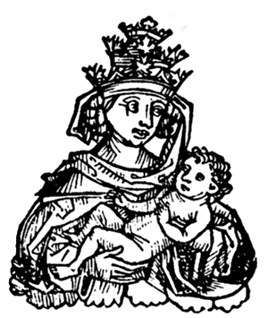

IL EN A DEUX ET BIEN PENDANTES !
La légende veut qu'une femme soit parvenue à se faire élire pape vers le milieu du IXe siècle. Cette personne, qui n'a probablement jamais existée, est connue comme la Papesse Jeanne, ci-dessous représentée. La légende va plus loin en affirmant que dès lors, un rite spécial aurait été mis en place pour éviter que pareille mésaventure ne se reproduise. Lors l'élection d'un nouveau pape, une personne était chargée de constater la présence effective des deux testicules du nouveau souverain pontife en proclamant la formule consacrée « Duos habet et bene pendentes ».

[ Accueil ]